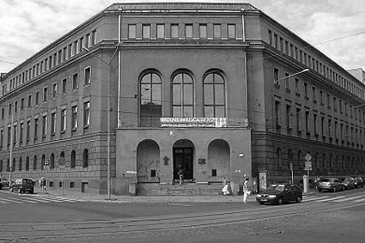
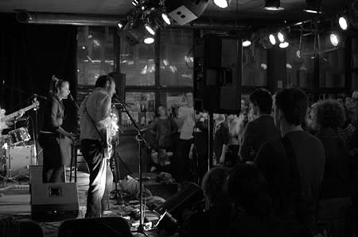
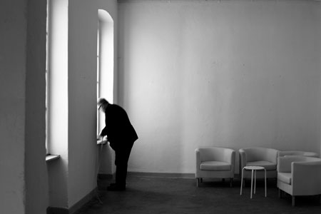
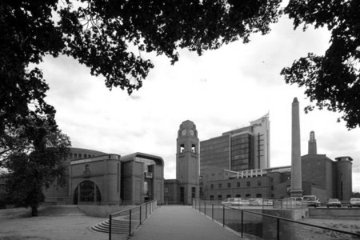
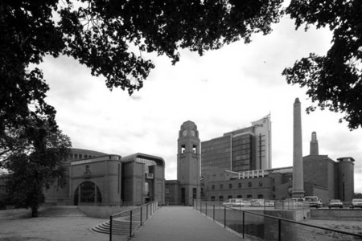

Venue
University of Arts in Poznań
University of Arts in Poznań (formerly the Academy of Fine Arts) is a group of buildings situated in the city center, just a few steps from the old town and Poznan National Museum. The university is a crossroads of various concepts in many art disciplines from classical to the contemporary. The main part of this year’s symposium will happen in the university Great hall gallery.


Address:
al. Marcinkowskiego 29
60-967 Poznań 9
Google maps
Meskalina
Café bar Meskalina will host the TypeShorts evening. Located in a modernist building of the Arsenal Gallery in the middle of the Old Market, Mescalina is a place of many cultural events. Continuing the tradition of its older brother, Meskal, it became one of the most favorite Poznań artistic clubs. There is always something going on. The restaurant can accommodate around 150 people and during the summer opens its beer garden with a music stage.

Address:
Stary Rynek 6
next to the Arsenal Gallery
Google maps
Szyperska Gallery
Szyperska Gallery will host the Type & sign studio exhibition in its three spatious and simple rooms. It is 15 minute walk from the Auditorium and the Old Market.

Address:
ul.Szyperska 2
61-754 Poznań
Google maps
Galeria Słodownia, Stary Browar
Słodownia (Malt House) will host the TypeTogether exhibition. It is a historical building used by Kulczyk Foundation for exhibitions, performances, concerts and film screenings. You can find it in the yard of the shopping gallery Stary Browar (Old Brewery). The yard is on the second floor when entering from the Półwiejska street.
") 

Address:
Stary Browar shopping gallery
ul. Półwiejska 32
61-888 Poznań
Google maps
TypeTalks2 on Google maps
Design © TypeTalks, 2010–13.
Content © Respective speakers, 2010–13.